Each sprite cut out by every method. Every cell shows the cutout twice: over a checkerboard (to see holes and leftover grey) and over the office scene darkened (to see halos and hair edges). Click to zoom, arrow keys to step through, Esc to close. You are the judge; my notes below are from looking at the results, not a verdict.
Replicate (current): 851-labs/background-remover in the cloud. The reference. Cloud call, a few seconds each, fractions of a cent.
rembg · ISNet anime: Trained on anime characters. Tiny and very fast on CPU. Average 0.5 s per image.
rembg · BiRefNet general: BiRefNet via onnx on CPU. Average 6.7 s per image.
BiRefNet HR matting: High-res matting variant: soft alpha, meant for hair. CPU at 2048 px. Average 37.5 s per image.
BRIA RMBG-2.0: Popular BiRefNet-based model from BRIA (non-commercial licence). CPU. Average 14.0 s per image.
ComfyUI · Lucida: BiRefNet fine-tune for illustrations and soft alpha, run by ComfyUI's built-in node on the GPU. Average 57.9 s per image.
My read: On these flat grey backgrounds every method is close to the Replicate cutouts: the alpha masks differ from Replicate by 0.5 to 0.9 percent on average, and I could not find a visible halo or hole at normal size. Differences show up in small details, such as Lucida keeping the drawn steam puff next to Kaori (Replicate drops it) and slightly different wisps on Mio's bun and Rei's ponytail. Speed on this machine: ISNet anime 0.5 s per image on CPU, BiRefNet general 6.7 s, RMBG-2.0 14 s, BiRefNet HR matting 37 s (CPU, 2048 px). Lucida's time is inflated because it queued in ComfyUI behind other image renders; alone on the GPU it takes about a second. My suggestion is ISNet anime for speed, or BiRefNet general as a safer all-rounder, but zoom in on hair and glasses and decide by eye.
mio-bored
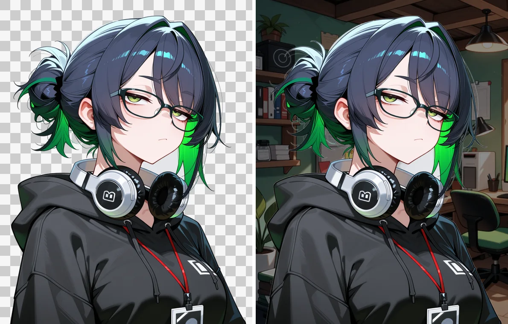
Replicate (current)
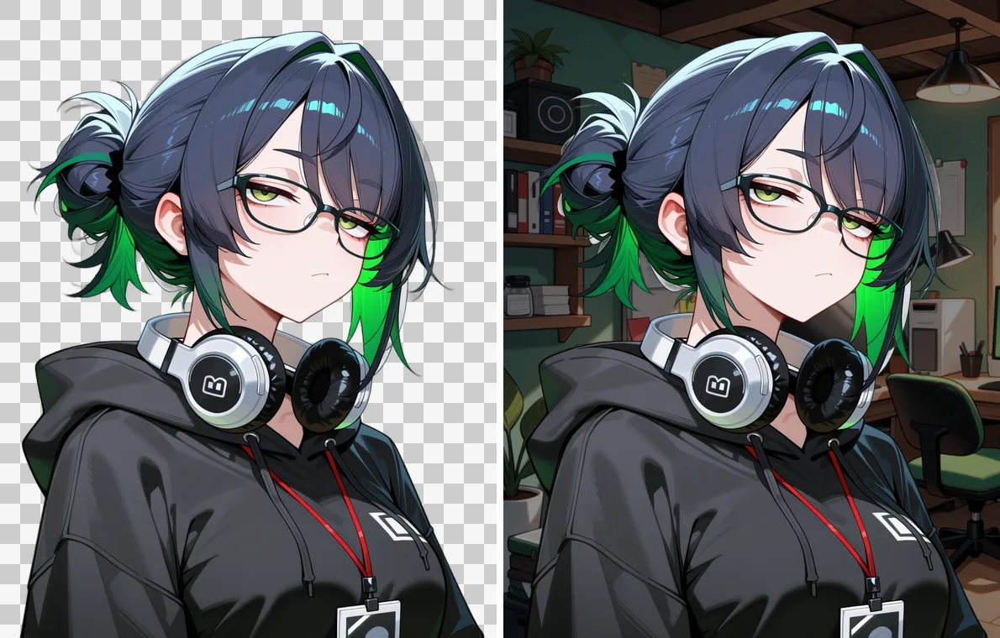
rembg · ISNet anime · 0.4 s
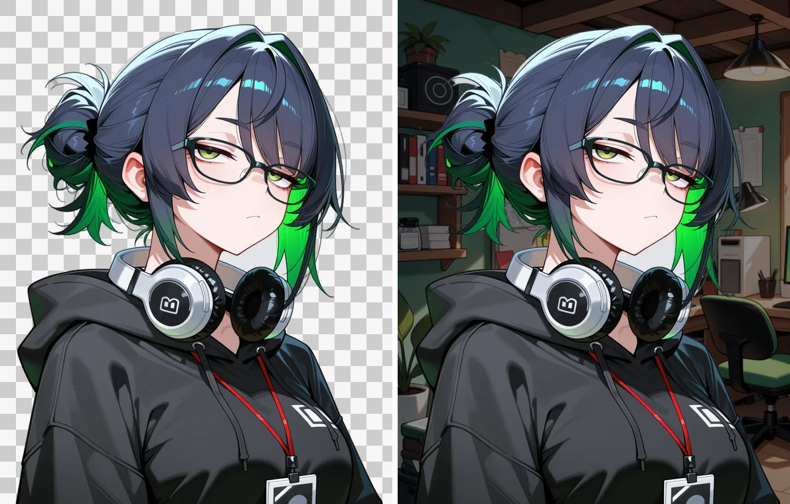
rembg · BiRefNet general · 6.6 s
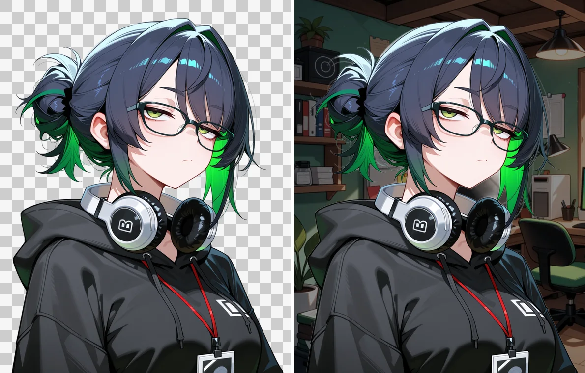
BiRefNet HR matting · 41.3 sBRIA RMBG-2.0 · 15.1 s
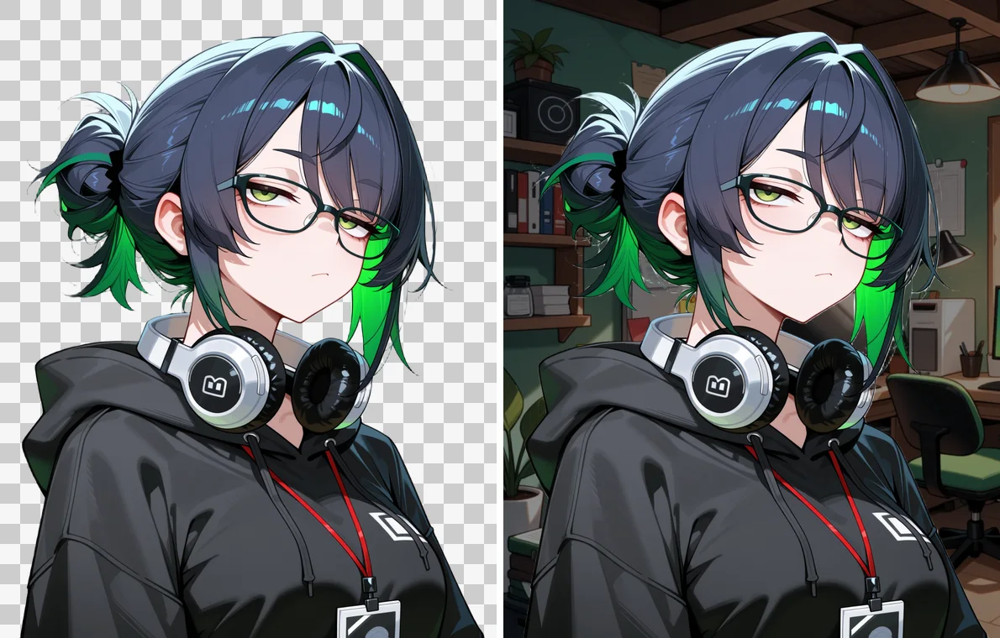
ComfyUI · Lucida · 88.9 s
rei-smirk
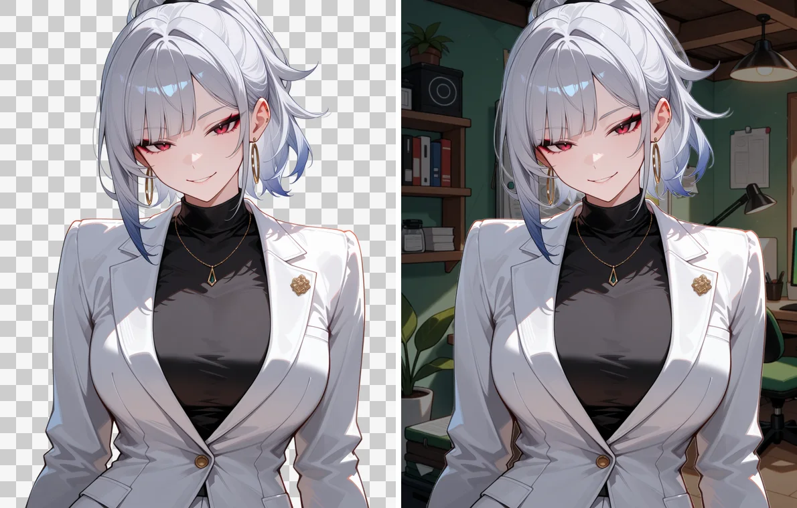
Replicate (current)
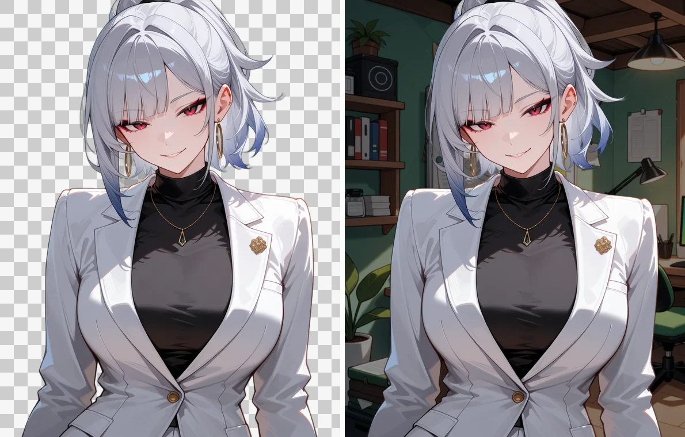
rembg · ISNet anime · 0.6 s
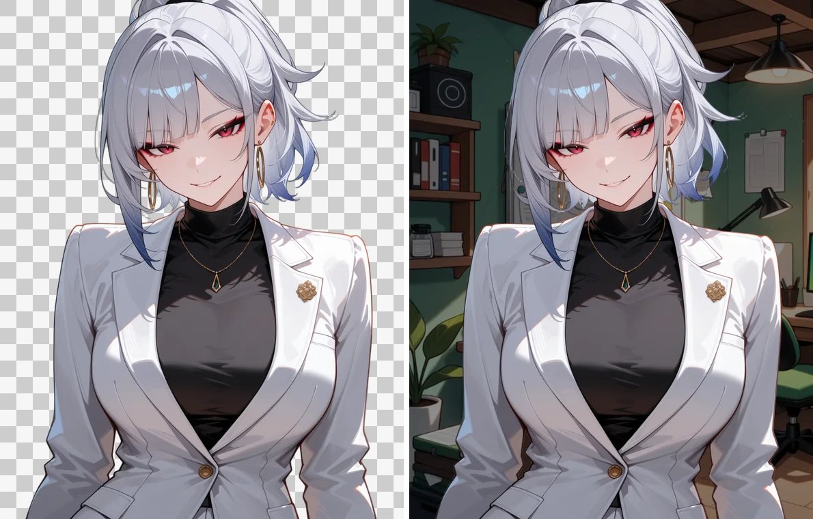
rembg · BiRefNet general · 6.1 sBiRefNet HR matting · 34.4 s
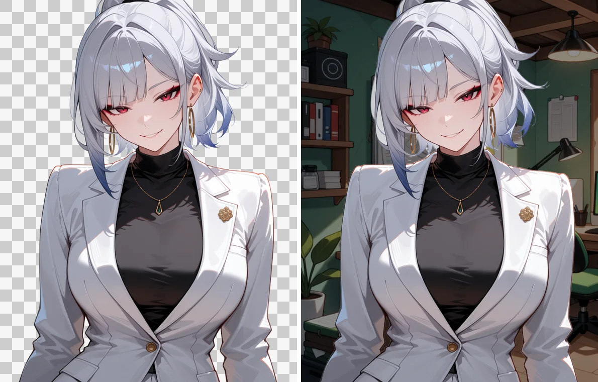
BRIA RMBG-2.0 · 16.2 s
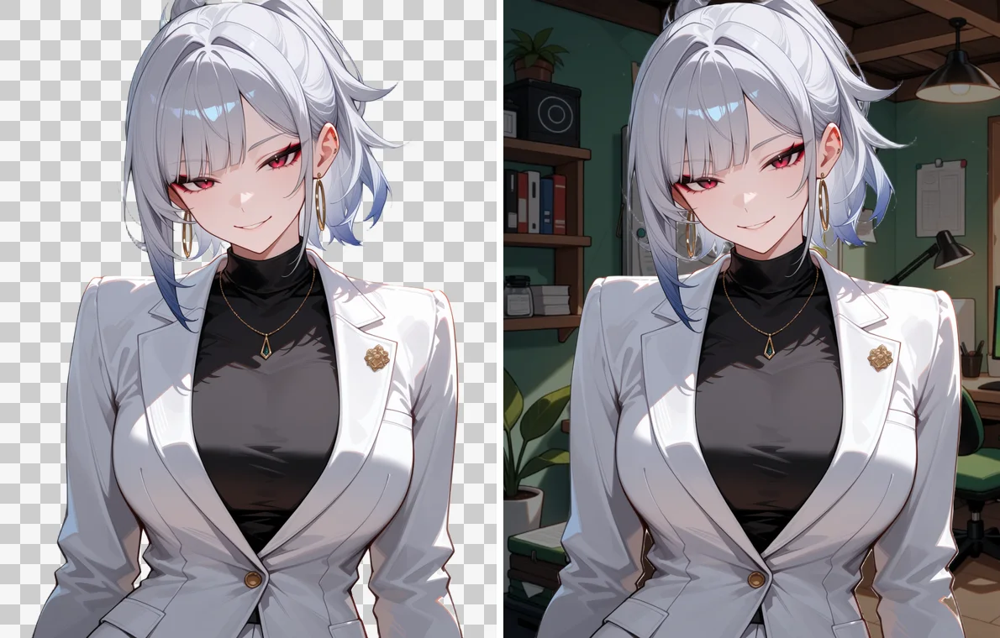
ComfyUI · Lucida · 36.1 s
ishibashi-suspicious
Replicate (current)rembg · ISNet anime · 0.4 srembg · BiRefNet general · 6.7 s
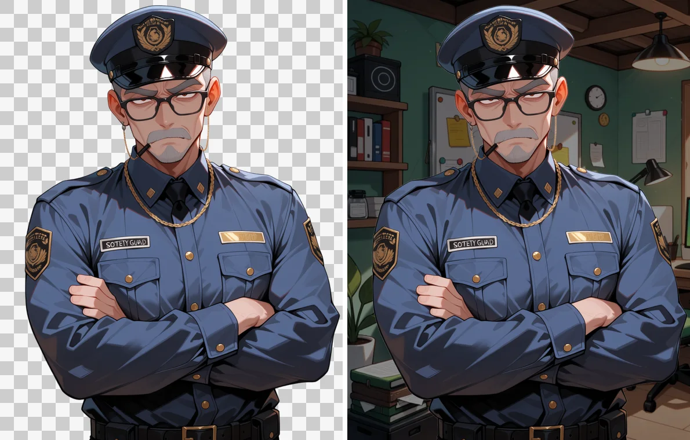
BiRefNet HR matting · 37.4 sBRIA RMBG-2.0 · 16.7 s